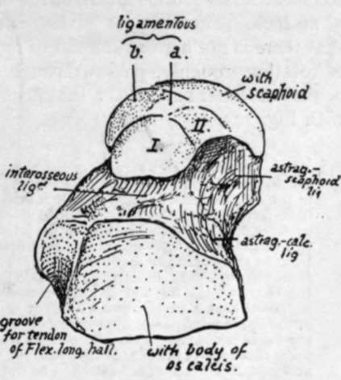
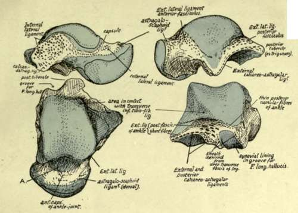
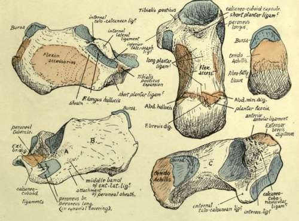

The Foot. Part 4
Description
This section is from the book "The Anatomy Of The Human Skeleton", by J. Ernest Frazer. Also available from Amazon: The anatomy of the human skeleton.
The Foot. Part 4
Now place the bone on the calcaneum and articulate it with the bones of the leg : the tibia rests on its upper surface and by its malleolus, with a small curved articular area directed forwards and downwards on its inner side, whereas the fibula has a larger triangular facet, concave from above downwards, on its outer side only. Evidently, therefore, the weight of the body is transmitted by the tibia, and the fibula is only a guard to strengthen the joint and prevent displacement of the foot outwards.
Every time the foot comes to the ground, in making a step forward, there would be a tendency for the leg bones to slip forward on to the dorsum of the foot, if there were no special mechanism to prevent it: this is provided by the shape of the upper articular (or trochlear) surface of the astragalus, which is broader in front than behind, so that any forward movement of the leg bones on it is checked by the increasing breadth of the surface. The anterior and posterior ligaments of the joint are feeble, for they do not limit movement : the dorsi-flexion of the joint is limited by the broader part of the articular surface becoming engaged between the tibia and fibula, and excessive dorsi-extension is checked by tension of the posterior fibres of the lateral ligament. The lateral ligaments hold the bones in apposition. The internal lateral ligament, fastened to the margin of the malleolus, has its middle fibres attached to the sustentaculum tali, which is about three-quarters of an inch immediately below the malleolus : its most anterior and posterior fibres reach the astragalus, so that we can find markings for these (Fig. 145) on the neck and inner side of the astragalus respectively.
The external lateral ligament has three long bands, between which there are short feeble fibres attached round the articular margin. The anterior and posterior bands go to the astragalus, and the middle one to the os calcis in a downward (and slightly backward) direction. We can find the attachment of the first two bands on the astragalus (Fig. 145) : a marking on the outer and upper aspect of the neck is for the anterior band, while the posterior fasciculus reaches a groove that lies on the back and outer aspect of the bone, and a small nodule of bone that lies at the end of this and may occasionally exist as a separate ossicle, the os trigonum. This band, as seen in Fig. 136, lies below the level of the transverse inferior tibio-fibular band, which is covered by synovial membrane on its deep aspect, and comes into relation with the astragalus, causing the postero-external part of the trochlear surface to show a slightly bevelled-off facet for it (Fig. 145).
Fig. 144.-Inferior surface of left astragalus. I. and II. are facets for the front part of os calcis which may be continuous or separated more or less ; a., surface lying on inferior calcaneo-scaphoid ligament which extends between sustentaculum tali and scaphoid ; 6., the inner continuation of the same surface moulded by the internal lateral ligament which passes into the other, and by tendon of Tibialis posticus lying over it. The tendinous expansion and ligaments exhibit a fibro-cartilaginous thickening here which plays over and covers this part of the bone, and completes the capsule for its head.
Now consider the action of the lateral ligaments in movement of the joint. The trochlear surface forms an arc of 120 degrees of a circle with a radius of about four-fifths of an inch. The articular surface is about half as long again as that on the tibia, so that there is not a great amount of movement possible between the bones. The centre of rotation, roughly, passes through the apex of the outer malleolus and below and behind the inner malleolus : the effect of movements on the various bands is considered with Fig. 145.
In addition to the points already seen on the astragalus in connection with the ankle-joint, certain other details are to be noted on the bones. The posterior aspect exhibits two grooves ; one has been already examined, but the other, internal to it, is better marked and broader and is for the tendon of Flexor longus hallucis. When the astragalus and os calcis are articulated it can be seen that this groove leads directly to the groove under the sustentaculum tali. At the top of this groove is the posterior tubercle (or os trigonum) on the outside and a sharp point on the inner side, to which a strong band of the inferior calcaneo-astragaloid capsular ligament is fastened.
The neck has markings for astragalo-scaphoid dorsal ligaments in addition to lateral fibres. It also affords attachment to interosseous and anterior annular ligaments (see p. 178).
Fig. 145.-Left astragalus seen from the sides, from above, and from behind. A, on the upper surface of the neck of the bone, is an anterior prolongation of the synovial cavity of the ankle which is well marked in the new-born foot; in the adult it is as a rule reduced and broken up into loculi by the presence of fibro-fatty septa which project into it. The extension of synovial cavities beyond their articular surfaces is particularly marked in this joint and in the astragalo-scaphoid articulation, and on the inner side of the neck the two synovial membranes approach each other fairly closely, being separated only by thin and indefinite capsular fibres. The articular surface for the tibia is about 4 mm. broader in front than behind ; in dorsi-flexion this broadening causes the astragalus to be locked firmly between the bones of the leg, but in dorsi-extension the narrower part of the astragalus is engaged and it is supposed that a certain small amount of lateral movement is then possible. The axis of movement of the ankle-joint passes approximately through the end of the fibular malleolus, and below and behind the inner malleolus ; thus the middle fasciculus of the external lateral ligament can be more or less tense throughout the range of movement, which is not large but rather less than 550. But the anterior and posterior fasciculi are attached to the fibula further away from the axis, so they are of more value in limiting movement, and they become tense in dorsi-extension and dorsi-flexion respectively. The fibres of the internal ligament are strongest in the middle and posterior parts, the latter especially having a large and well-marked area of attachment on the astragalus ; these fibres limit dorsi-extension as, in that movement, the malleolus of the tibia is carried forward on the astragalus. The other ligaments on the bone are attached round the articular surfaces concerned. The line of the centre of gravity of the body falls on or in front of the front part of the ankle-joint in the standing position.
Fig. 147.-Various surfaces of left os calcis. On the outer surface, A is an area covered by the middle fasciculus of the external lateral ligament of the ankle passing down to the tubercle below it ; the peroneal tendons turn forward over this fasciculus, being held down by a sling-like annular band that is attached to the bone below the ligamentous tubercle. B, surface covered by subcutaneous tissues. C, on the upper aspect, is in relation with the loose fatty tissue lying between the tendo Achillis and the ankle. The upper right figure shows the back surface of the bone, on which are three areas ; upper for the bursa deep to the tendo Achillis, middle for this tendon, and lower roughened by the attachment of the thick fibro-fatty tissue of the heel.
The head has articular surfaces in front, below, and on the inner side. It rests below on the sustentaculum tali and shows a definite facet for this, which is continuous in front and externally with another inferior facet which shows where the head rests on the front part of the body of the os calcis : occasionally these two facets are more or less discontinuous. In the articulated foot it can be seen that an interval exists between the sustentaculum and scaphoid, and in this interval a part of the lower surface of the head is visible : the interval is bridged by the inferior calcaneonavicular ligament, on which this part of the head rests, and it therefore presents another facet, between and continuous with the others, for this ligament. The inner aspect of the head lies above the level of the sustentaculum and ligament : it is covered, as shown in Fig. 143, by intermediate fibres of the internal lateral ligament, running down to decussate with those of the lower ligament, and over these lies the expansion from Tibialis posticus to the cuboid, which often presents a fibrocartilaginous thickening.
Observe the surfaces by which the astragalus articulates with the os calcis. That under the body is concave, while the under surface of the head is convex, and their axes are practically parallel. This disposition hinders any rocking or lateral movement of the bones on one another, but the astragalus can be moved forwards and inwards on the os calcis, the two facets sliding over their opposed surfaces, and this is what occurs when weight is thrown on the astragalus : it slightly opens out the inner arch and the astragalus moves a little forward, carrying the scaphoid forward, and pressing its head on the strong inferior calcaneonavicular ligament and the underlying expansion of Tibialis posticus.
The somewhat inward direction of the neck and head is more apparent in the fcetal and child's foot. In these the natural position of the foot is one of inversion, and the subsequent comparative straightening of the bone is associated with the change of shape of the foot that results from putting the sole on the ground.
The neck is also comparatively longer and narrower in the new-born foot and the trochlear cartilage is prolonged on to it for some distance. The angle made by the axis of the neck with that of the body in such a foot is about 1480, while in the adult astragalus it is about 1520.
The astragalus is the only bone in the tarsus that has no muscular or tendinous attachments. It is partly ossified at birth.
Continue to:
- prev: The Foot. Part 3
- Table of Contents
- next: Os Calcis